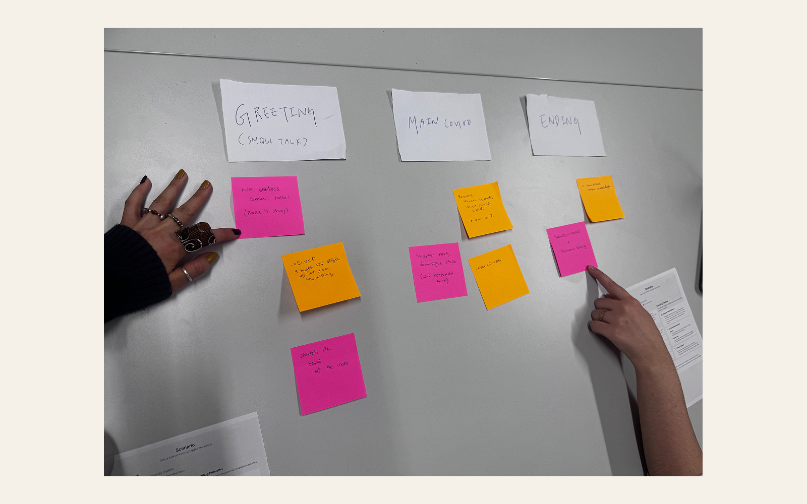
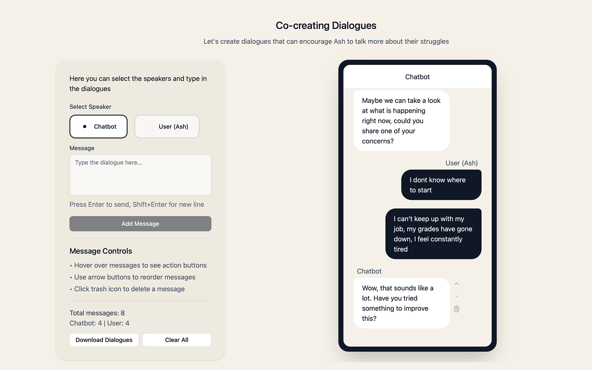
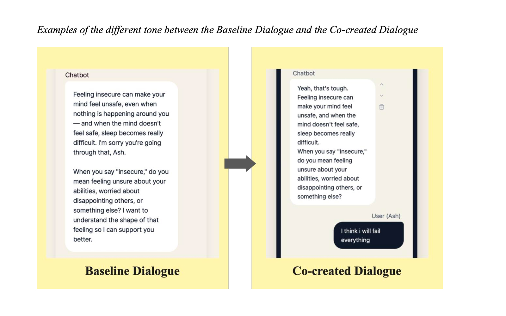
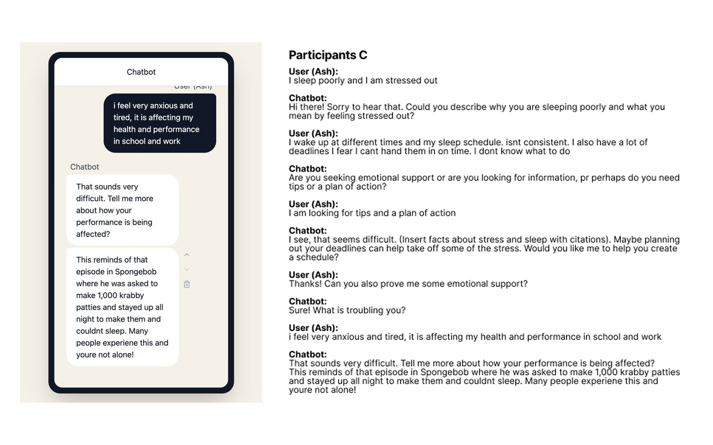

UX Design · Master's Thesis
Co-creating chatbot dialogue for student mental well-being
Researching what university students actually want from a mental well-being chatbot — then turning their words into design guidelines a team could build from.
Project description
"Co-creating Chatbot Dialogue for Supporting University Students' Mental Well-being" is my thesis research project — researching university students' needs from a chatbot designed for mental well-being support, and gathering their input on preferred conversational tendencies.
Target audience: university students facing stressors like academics and purpose, who hesitate to seek help due to stigma or access barriers.
The outcome: a set of 11 user-validated conversational strategies and design guidelines for mental well-being chatbots targeting student users.
Define the goals
Objective: investigate which conversational strategies university students prefer in a chatbot, to encourage them to disclose their mental well-being concerns.
Framework: the project aimed to link design strategies to Interpersonal Communication Competence (ICC) theory — skills like empathy, interaction management, and altercentrism.
Design & research process
-
01
Scenario & baseline Identified chronic irregular sleep as a primary student concern, wrote a user scenario ("Ash"), and used GPT-4 to generate a Baseline Dialogue for participants to react against.
-
02
Evaluate the baseline Ten Master's-level students read the GPT-4 dialogue first and said what did and did not work — before being asked to improve anything.
-
03
Brainstorm The "Pressure Cooker" method with sticky notes, to get quantity of ideas out before judging any of them.
-
04
Co-create Participants rewrote the dialogues themselves, on a platform I built for the purpose, aiming to make a student more willing to disclose.
-
05
Thematic analysis Transcribed every session and used ATLAS.ti for a hybrid deductive/inductive analysis, mapping what participants did back onto the ICC framework.


Key insights & findings
- Functionality over pure empathy — despite applying social norms to chatbots, users fundamentally view them as machine tools. Chatbots must balance emotional support with practical, functional value.
- Structure matters as much as content — chatbots must use proper conversational structure to avoid cognitive overload.
- Tone & assumptions — chatbots should avoid assuming users' inputs, and should adopt a casual, approachable tone.
Many users mentioned the word "gently" — and the use of "—" makes the whole speech robotic and seems insincere. Observation from a bad dialogue example
Result: design guidelines
The persona shift: mental well-being chatbots should be designed to act as a "knowledgeable, competent friend" rather than a stiff medical professional.


Design principle
Open with empathy, then move on. Validate the user's feelings once at the start, then progress toward understanding or solutions — repeating affirmations feels robotic and stalls the conversation. One bubble, one idea: long paragraphs trigger cognitive overload. Ask, don't assume: use open-ended questions instead of preset options.
11 conversational strategies
Next in the journal —